| Servicio | Descripción | Imagen |
|---|---|---|
| Limpieza Dental Profunda (Profilaxis) | Sirve para: Prevenir gingivitis. Cuándo: Cada 6 meses. Paso a paso: 1. Eliminación de sarro calcificado con ultrasonido. 2. Pulido de superficies con pasta abrasiva controlada. 3. Limpieza de espacios interdentales con hilo. 4. Aplicación de flúor protector. |
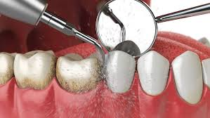 |
| Resina Dental (Empaste) | Sirve para: Eliminar caries. Cuándo: Al detectar cavidades o dolor al dulce. Paso a paso: 1. Limpieza del tejido dental dañado. 2. Acondicionamiento del esmalte con adhesivos. 3. Moldeado de la resina dándole forma anatómica al diente. 4. Endurecimiento con lámpara LED. |
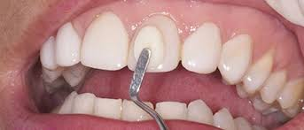 |
| Extracción de Muela del Juicio | Sirve para: Evitar apiñamiento. Cuándo: Si causan dolor o están impactadas. Paso a paso: 1. Adormecimiento de la zona con anestesia local. 2. Acceso quirúrgico a la pieza impactada. 3. Retiro cuidadoso del tercer molar. 4. Colocación de puntos de sutura y control de sangrado. |
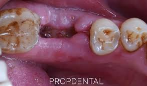 |
| Tratamiento de Conducto (Endodoncia) | Sirve para: Salvar un diente infectado. Cuándo: Caries profunda o fractura nerviosa. Paso a paso: 1. Apertura de la corona para exponer el nervio. 2. Extracción del tejido infectado con limas de precisión. 3. Lavado con desinfectantes. 4. Relleno hermético de los conductos radiculares. |
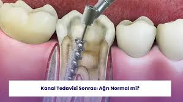 |
| Blanqueamiento Dental | Sirve para: Aclarar el color. Cuándo: Por manchas de café, tabaco o estética. Paso a paso: 1. Preparación de la superficie dental. 2. Aislamiento de encías para evitar irritación. 3. Aplicación de gel de peróxido de alta concentración. 4. Activación del gel mediante luz azul o láser. |
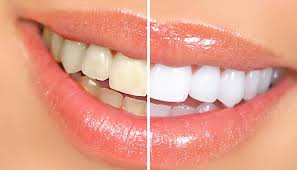 |
| Colocación de Brackets (Ortodoncia) | Sirve para: Alinear dientes. Cuándo: Dientes chuecos o mala mordida. Paso a paso: 1. Pulido y secado del esmalte. 2. Pegado de cada bracket con adhesivos estéticos. 3. Instalación del arco metálico que ejercerá la presión. 4. Fijación del arco con ligas elásticas de colores. |
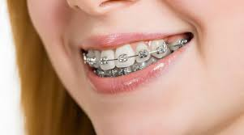 |
| Implante Dental | Sirve para: Reponer dientes perdidos. Cuándo: Tras perder una pieza definitiva. Paso a paso: 1. Incisión e inserción del perno de titanio en el maxilar. 2. Cicatrización para unión ósea sólida. 3. Conexión del pilar de soporte. 4. Instalación de la corona de porcelana definitiva. |
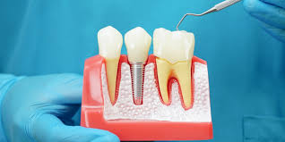 |
| Coronas Dentales (Fundas) | Sirve para: Proteger dientes débiles. Cuándo: Dientes muy fracturados o tras endodoncia. Paso a paso: 1. Reducción controlada del tamaño del diente original. 2. Toma de molde físico o digital. 3. Instalación de funda provisional de acrílico. 4. Cementado final de la corona de porcelana. |
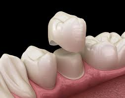 |
| Carillas Estéticas | Sirve para: Diseño de sonrisa. Cuándo: Dientes manchados, pequeños o desgastados. Paso a paso: 1. Preparación mínima de la cara frontal del diente. 2. Escaneo digital para diseño personalizado. 3. Prueba de estética y color en boca. 4. Adhesión permanente con resinas de alta resistencia. |
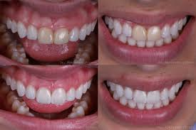 |
| Aplicación de Selladores (Preventivo) | Sirve para: Prevenir caries. Cuándo: En niños al salir las primeras muelas. Paso a paso: 1. Limpieza de las fosas profundas de las muelas. 2. Acondicionamiento del esmalte. 3. Aplicación de resina fluida selladora. 4. Endurecimiento con luz para crear una barrera física. |
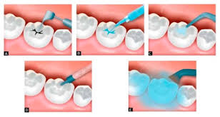 |
| Prótesis Removible (Dentadura) | Sirve para: Reemplazar varios dientes. Cuándo: Pacientes con múltiples ausencias. Paso a paso: 1. Toma de impresiones anatómicas exactas. 2. Registro de la posición de mordida. 3. Prueba de estética con dientes de cera. 4. Ajustes finales de presión y entrega del aparato. |
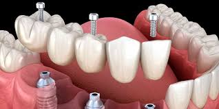 |
| Gingivectomía (Recorte de encía) | Sirve para: Sonrisa gingival. Cuándo: Cuando la encía cubre mucho el diente. Paso a paso: 1. Diseño y marcaje del nuevo contorno de la sonrisa. 2. Recorte quirúrgico del exceso de tejido. 3. Remodelación del borde gingival. 4. Curación y aplicación de apósitos si es necesario. |
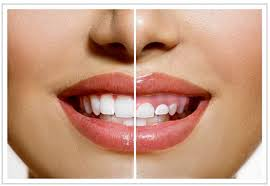 |
| Frenectomía | Sirve para: Liberar frenillo. Cuándo: Dificultad al hablar o espacio entre dientes frontales. Paso a paso: 1. Anestesia localizada del área a tratar. 2. Incisión y liberación del tejido fibroso limitante. 3. Reposicionamiento de los bordes. 4. Sutura con hilos reabsorbibles que caen solos. |
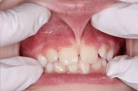 |
| Injerto de Hueso | Sirve para: Ganar volumen óseo. Cuándo: Para poder colocar un implante si no hay hueso. Paso a paso: 1. Exposición del área ósea deficiente. 2. Colocación de material óseo en gránulos. 3. Instalación de membrana protectora de colágeno. 4. Cierre de la encía para permitir la regeneración. |
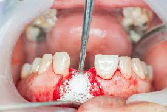 |
| Incrustación Dental (Onlay/Inlay) | Sirve para: Restaurar molares. Cuándo: Cavidades demasiado grandes para resina simple. Paso a paso: 1. Preparación de la cavidad del diente. 2. Escaneo para fabricación en laboratorio. 3. Creación de la pieza sólida en cerámica. 4. Cementado de alta precisión en la cavidad preparada. |
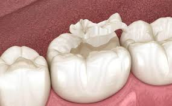 |
| Pulpotomía (Endodoncia infantil) | Sirve para: Quitar dolor en niños. Cuándo: Caries que llega al nervio en dientes de leche. Paso a paso: 1. Eliminación total de la caries. 2. Acceso y retiro del nervio de la corona dental. 3. Aplicación de medicamento biocompatible. 4. Sellado final con resina o corona de acero. |
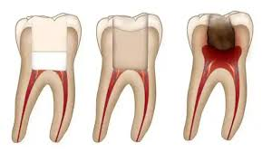 |
| Guardas Oclusales (Para Bruxismo) | Sirve para: Proteger del desgaste. Cuándo: Si rechinas los dientes al dormir (Bruxismo). Paso a paso: 1. Toma de moldes de alta precisión de ambas arcadas. 2. Fabricación en acrílico termoplástico rígido. 3. Ajuste de la mordida para equilibrar fuerzas. 4. Entrega e instrucciones de mantenimiento nocturno. |
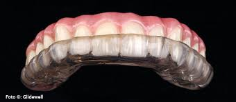 |
| Alargamiento de Corona | Sirve para: Exponer diente sano. Cuándo: Diente roto bajo la encía. Paso a paso: 1. Adormecimiento local de la zona. 2. Descenso quirúrgico del nivel de encía y hueso. 3. Exposición de estructura dental sana bajo el nivel gingival. 4. Sutura estética de los bordes. |
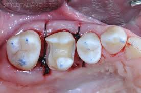 |
| Raspado y Alisado Radicular | Sirve para: Tratar periodontitis. Cuándo: Encías que sangran y se separan del diente. Paso a paso: 1. Aplicación de anestesia por cuadrante. 2. Introducción de curetas bajo la encía para remover sarro profundo. 3. Alisado de la raíz dental. 4. Lavado con antisépticos como clorhexidina. |
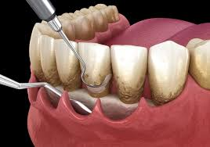 |
| Aparatos de Expansión Palatina | Sirve para: Ensanchar paladar. Cuándo: Niños con paladar estrecho o mordida cruzada. Paso a paso: 1. Toma de moldes para ajuste del aparato. 2. Cementado de bandas metálicas en los molares. 3. Fase de giros diarios del tornillo central por parte del tutor. 4. Periodo de retención ósea. |
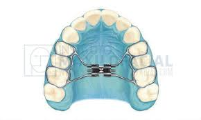 |
| INICIO | ARTICULOS | SERVICIOS | PROCEDIMIENTOS | HORARIO |